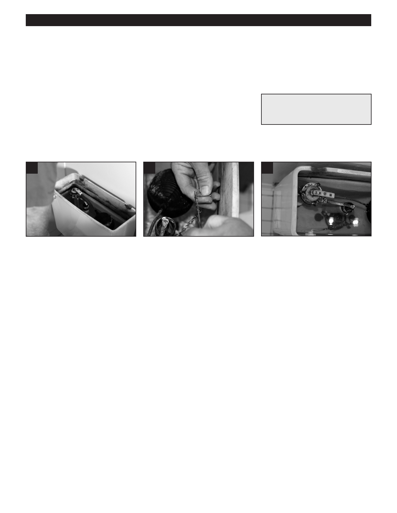

PA RT I C I PA N T R E S O U R C E G U I D E
Adjusting a Toilet Chain
Toilet chains may become loose or even come off the lift bar. But no worries—just follow
the instructions on this page, and that chain will be back in service soon.
Safety
Tools and Materials Needed
Wear eye and hand protection.
Needlenose pliers
How-to Steps: Adjusting a Toilet Chain
1
2
3
1. Remove the tank cover.
2. Check that the chain is connected
3 Flush the toilet and check the
to lift bar with a bit of slack—not too
operation of the chain. Adjust as
tight, not too loose. Connect hook
needed.
to “best” link. If the chain is worn or
broken, replace it..
• Tip: If you have excess slack,
consider removing chain links
with a needlenose pliers.
Note: If the toilet has a chainless mechanism, straighten the wire connected to the lift bar.
Notes:
59